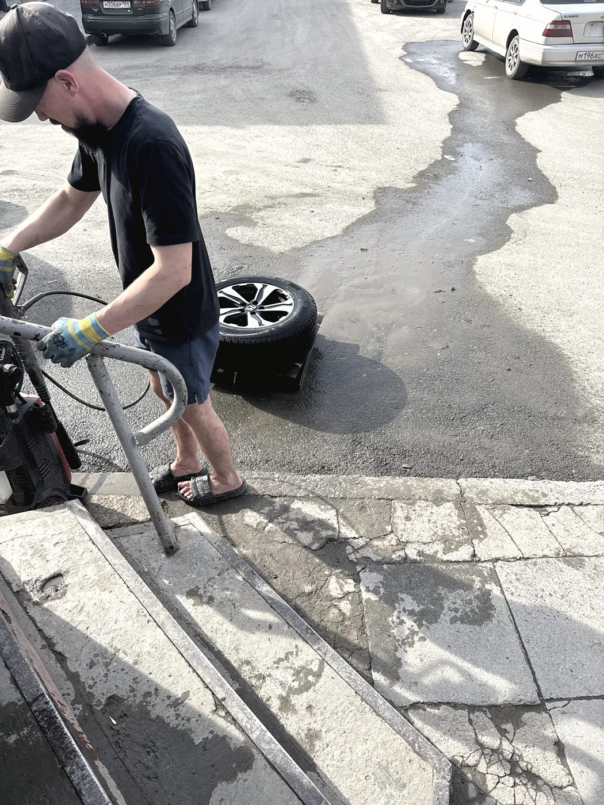
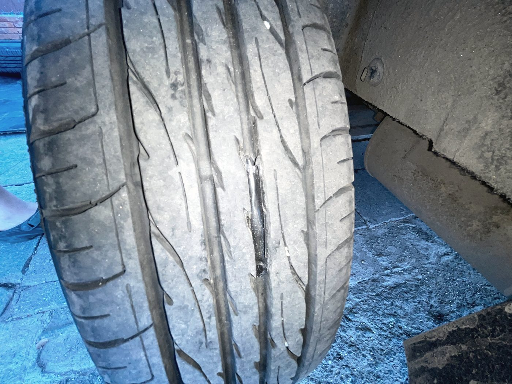
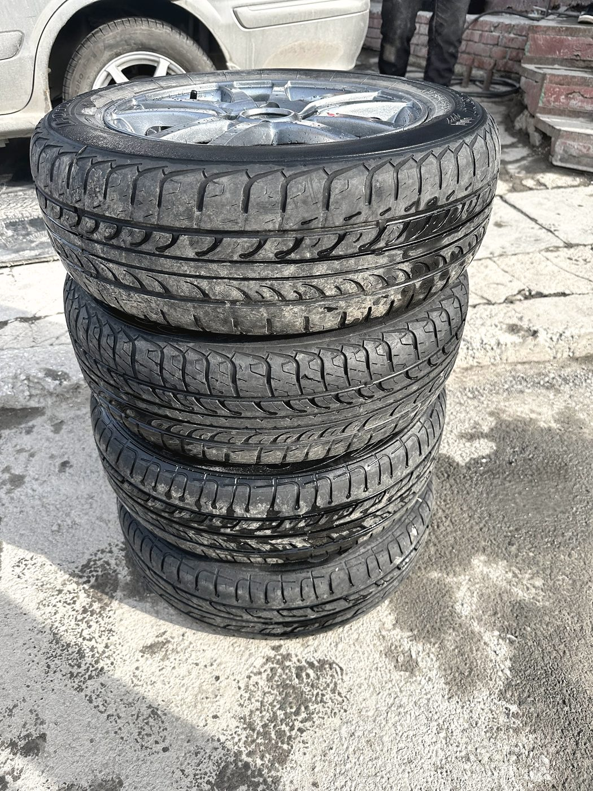
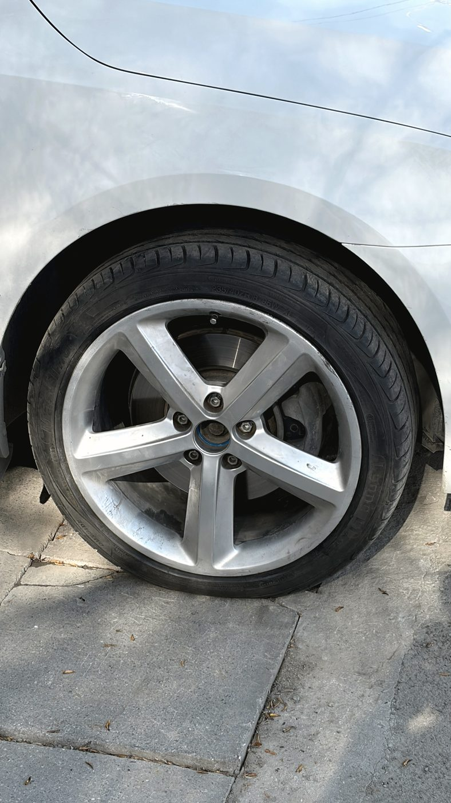
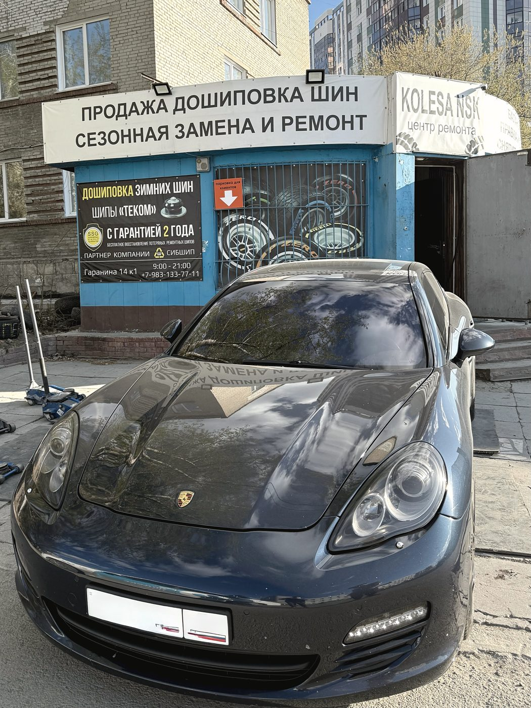
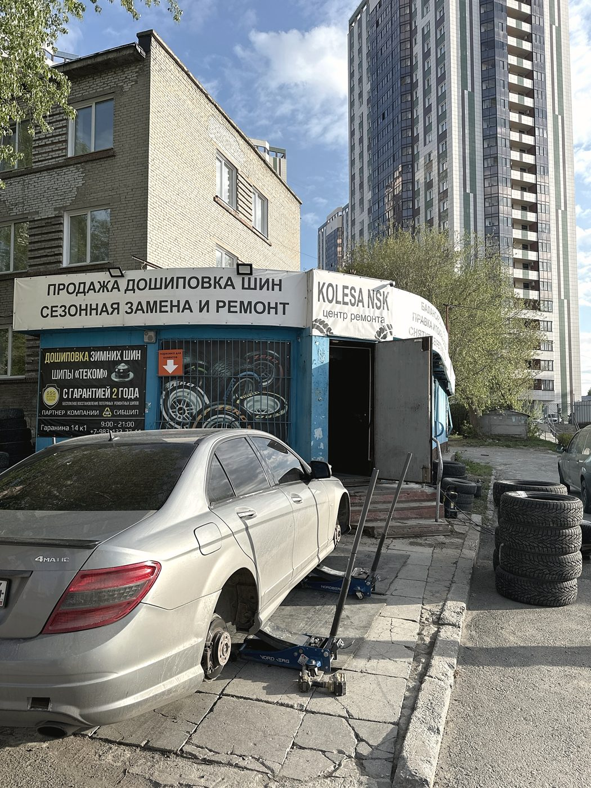
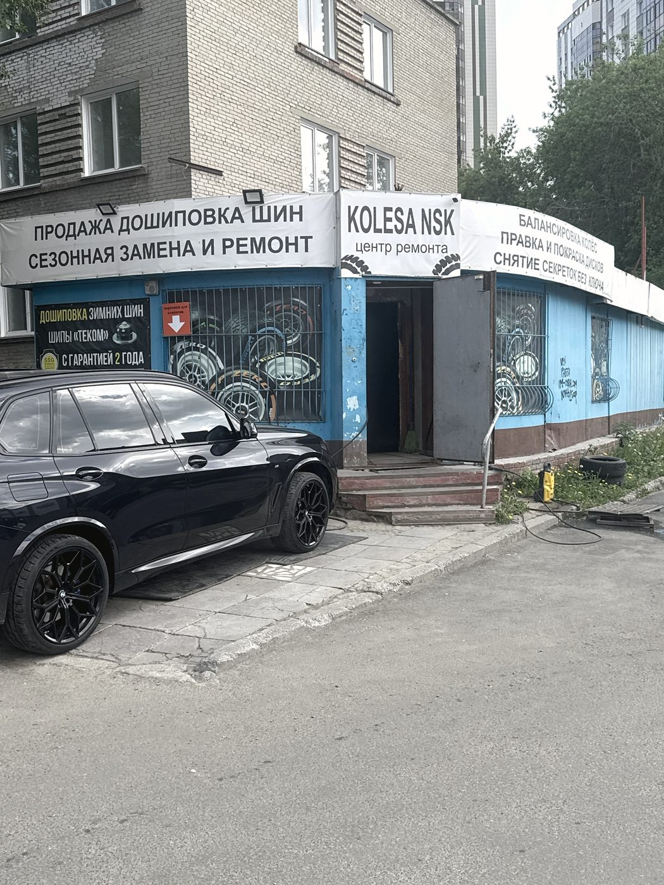

Мы работаем на улице, у бокса
Это не тёплый салон с кофемашиной: подъёмник, домкрат и площадка у Гаранина, 14 к1. Зато очередей почти не бывает, а работаем мы с восьми утра до девяти вечера каждый день, включая выходные.
Шиномонтаж и хранение шин · улица Гаранина, 14 к1 · Октябрьский район
Про это нам написали два разных человека, не сговариваясь: колёса здесь моют перед работой, а плоскость прилегания диска к ступице чистят до металла. Мелочь? От неё зависит, будет ли биение руля на трассе — и не открутится ли колесо через тысячу километров.

Порядок работы
Шиномонтаж умеют делать везде. Разница — в том, что происходит между «снять» и «поставить».
Услуги
Переобувание комплекта с мойкой колёс и балансировкой. Записаться можно заранее — в сезон это экономит час.
Боковые грыжи, проколы, порезы, пробитое насквозь колесо. Сначала смотрим, можно ли ремонтировать, и честно говорим, если нельзя.
Помятый диск чаще всего выправляется. Литьё, штамповка, кованые — смотрим по месту.
Трещины и сколы по ободу. Работа не для всех мастерских, у нас она есть.
После правки и сварки диск возвращается не «после ремонта», а нормального вида.
Потерялся ключ или сорвана головка — снимем. Инструмент при этом иногда страдает, но болты выкручиваются аккуратно.
Отдельная услуга, а не «если попросите». Чистый комплект удобнее и хранить, и возить.
Комплект стоит у нас в межсезонье, а вы не занимаете балкон и не возите резину дважды в год.
Нет нужной покрышки — подберём аналог. Ненужный комплект выкупим, а не отправим искать покупателя.
Шипы «Теком», мы партнёр компании «СибШип». Изношенная ошиповка — не повод покупать новый комплект: колесо дошиповывается и снова держит дорогу. На работу даём гарантию два года — это написано у нас на баннере, и это не фигура речи.



Честно
Это не тёплый салон с кофемашиной: подъёмник, домкрат и площадка у Гаранина, 14 к1. Зато очередей почти не бывает, а работаем мы с восьми утра до девяти вечера каждый день, включая выходные.
Один звонок — и вы приедете на свободный подъёмник. Клиенты пишут: «позвонил и сразу приехал, без очередей». Так это и работает.
Терминала для карт у нас нет. Перевод с карты принимаем — скажите об этом мастеру заранее, чтобы не искать банкомат на выдаче.
Иногда порез приходится на место, где ремонт небезопасен. Мы скажем это прямо, даже если ремонт был бы для нас выгоднее продажи вам б/у покрышки.


Отзывы · 5,0 из 5 по 128 оценкам в 2ГИС
«Ребята перед началом работы колёса моют, а также почистили плоскость прилегания диска к ступице»
Василий Ярославцев · отзыв в 2ГИС · 9 июля 2026
Приехал на Zeekr с 22-м радиусом — две боковые грыжи, плюс диск помяло. Взяли сразу, без ожидания. Грыжи заделали качественно, диск выправили как новый, все четыре колеса перекинули. К резине и дискам отнеслись бережно — на низкопрофильной 22-й это важно.
Максим Н. · 24 июля 2026
Нужно было срочно снять болты-секретки и заклеить баллон. Сломали несколько своих инструментов, но болты выкрутили аккуратно. А ещё при шиномонтаже моют колёса — по осени переобуваться поеду к ним, и колёса чистыми можно будет загрузить в машину.
Alexander Tsyganenko · 4 июля 2026
Всё сделали быстро, без очередей. Позвонил и сразу приехал. Приятно, что не навязывают лишние услуги, всё по делу.
Валерий Кудряшов · 1 июля 2026
Нашёл объявление на «Дроме». Необходимой покрышки не оказалось, но мне быстро подобрали аналог по той же цене.
Отзыв в 2ГИС · 13 июля 2026
Контакты
